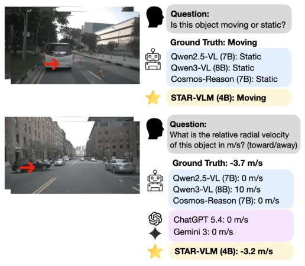
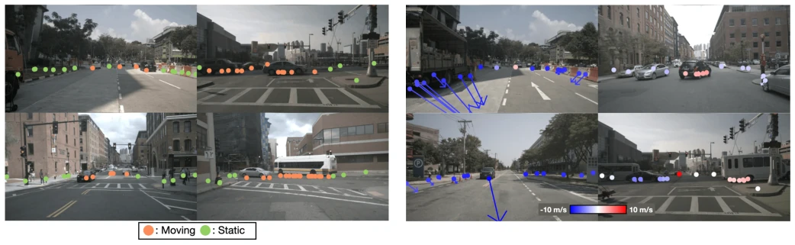
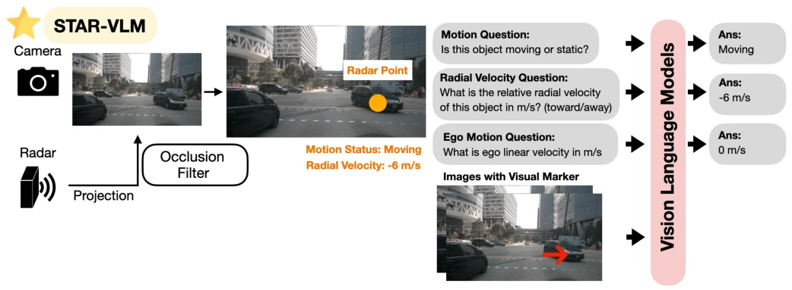
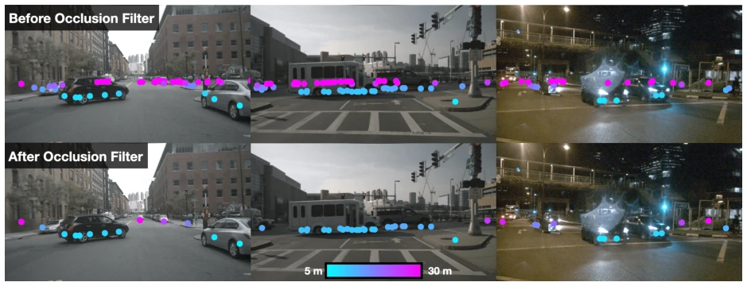
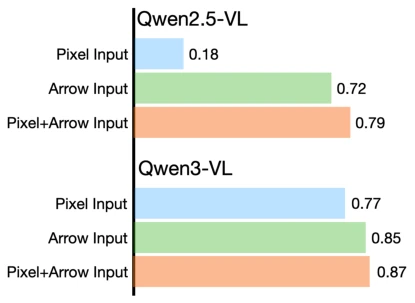
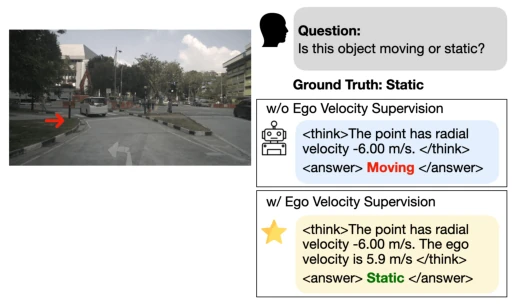
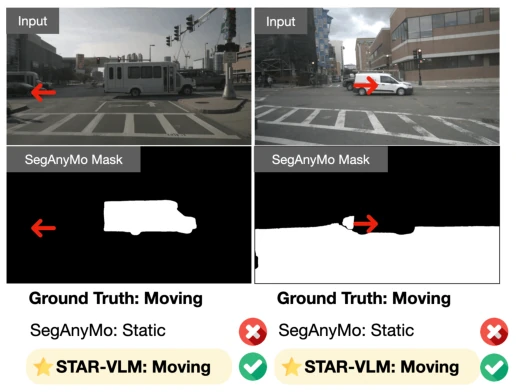
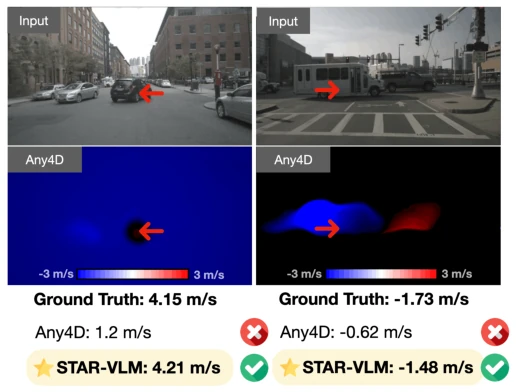

This paper forcibly adds a 'radar external module' to the VLM's 'spatiotemporal perception'. The authors found that existing VLMs either only view static images or learn motion through expensive annotations, so they treat the automotive radar's Doppler signal as a free teacher. This move is indeed clever, after all radar is cheap and widespread, much more favorable than LiDAR. But don't get too excited, it can only measure radial velocity, full velocity still relies on guessing. Moreover, this is essentially still SFT, not true 'unsupervised'. However, being able to beat specialized models like SegAnyMo soundly shows that radar supervision is indeed more reliable than pure visual hallucinations. Just don't know if radar noise is large on real cars, whether the model can withstand it. In addition, although occlusion filtering is proposed, the positioning error brought by radar point cloud sparsity remains a hidden danger, after all radar is not LiDAR, accuracy cannot be compared.
Embodied AI needs to understand dynamic scenes, but existing VLMs are very weak in spatiotemporal reasoning. Although DepthLM [6] solved spatial metrics, it did not solve the time dimension (speed). Other methods rely on manual annotations [3, 4] or synthetic data, high cost and have sim-to-real gap. LiDAR can only provide spatial depth, cannot directly provide motion state. Automotive radar has low cost, wide deployment, naturally provides Doppler speed measurement, is an ideal unlabelled supervision source. The authors want to solve the problem of VLM lacking physical metric spatiotemporal understanding, especially speed estimation. Existing works like DriveMLLM [11] focus on space, STSBench [13] focus on scenes, but both lack physical unit speed reasoning. Radar as a supplementary modality can directly provide motion clues, filling the gap in VLM's dynamic understanding in the physical world.

Fig. 1. We propose STAR-VLM, a simple yet effective method that leverages automotive radar data to improve the spatiotemporal reasoning capabilities of VLMs for autonomous driving. Existing open-source VLMs struggle with temporal motion classification, and even the latest proprietary VLMs, such as GPT-5.4 and Gemini-3, still face challenges in estimating the metric velocity of moving objects.

Fig. 3. Automotive radar provides relative radial velocity, indicating whether an object is moving toward or away from the sensor, based on measured Doppler information.
The overall process is: preprocess radar point cloud -> project to image -> build QA pairs -> SFT train VLM. 1. Data Construction (STAR-Bench): Use nuScenes data, radar points projected to image. Key innovation is **Occlusion Filtering** (Fig. 4), preventing radar points penetrating objects causing label errors. Specific logic is searching nearest neighbor, if depth diff > 0.3m and pixel dist < 30, then treated as occlusion and removed. 2. Prompt Design (Fig. 5): Combine text coordinates (x,y) and visual markers (arrows), better effect than pure coordinates or pure markers, enhance pixel-level grounding. Template fixed as "This point has motion state X" and "Radial velocity Y m/s". 3. Training Strategy (Fig. 6): Multi-task joint training. Besides motion classification and radial velocity, also add **ego-velocity** supervision. Experiments found this helps model distinguish ego motion and object motion, improve accuracy. 4. Model: Based on Qwen3-VL for SFT, no architecture modification. Unified focal length to adapt to different cameras. 5. Core Logic: Use radar Doppler as Ground Truth, let VLM learn physical motion laws, not just identify objects.

Fig. 4. Overview of STAR-VLM. We project radar points onto the camera image to obtain supervision labels and construct a QA dataset from radar measurements and ego-motion signals for VLM supervision. Each queried radar point is highlighted with a visual marker as a visual prompt.

Fig. 5. Projection of radar points into image space with and without the proposed occlusion filter. Point color represents the distance of each radar point. Without occlusion filtering, radar points from objects hidden behind visible surfaces are still projected into the image, which can introduce incorrect training labels. After applying the proposed occlusion filter, points from occluded objects are filtered out.

Fig. 6. Impact of different input pixel references. The numbers indicate depth estimation accuracy in the DepthLM setting. Using pixel coordinates as input leads to the worst performance, whereas visual markers such as arrows perform better. Our proposed joint input, which combines pixel coordinates and visual markers, achieves the best performance across different Qwen base models.

Fig. 7. Illustration of the effect of ego-velocity joint training on motion classification when the model is trained only for velocity estimation. Without ego-velocity supervision, the model cannot determine whether the observed motion is caused by ego motion or object motion. With ego-velocity joint training, the model can compensate for ego motion and infer motion state in the global coordinate frame.
Datasets: STAR-Bench (nuScenes) and TADBench. Baselines include open-source VLM (Qwen2.5/3-VL), physical VLM (Cosmos-Reason), metric depth VLM (DepthLM) and specialized models (SegAnyMo, Any4D). Metrics: Motion classification accuracy, Radial velocity MAE. Results: STAR-VLM is SOTA on both tasks, better than specialized models (Fig. 7, 8). Ablation experiments (Table II) show adding ego-velocity supervision significantly improves joint task performance. Compared to Any4D's dense optical flow, STAR-VLM is more accurate on query point accuracy. Compared to SegAnyMo's segmentation, STAR-VLM is more stable on motion state classification. Proves the effectiveness of radar supervision. In addition, on TADBench, even without pixel coordinate prompts, model can maintain good performance, generalization is strong.

Fig. 8. Although SegAnyMo produces dense motion masks, it does not always accurately classify motion at the target pixels. By contrast, STAR- VLM reliably predicts the motion status of the object at the queried location.

Fig. 9. Any4D produces dense scene flow, but the metric velocity estimation is off from ground truth. STAR-VLM accurately predicts the metric radial velocity of the object at the queried location.